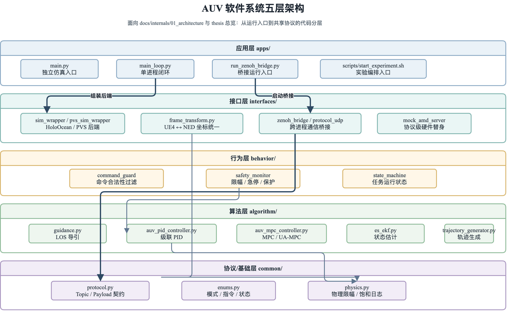
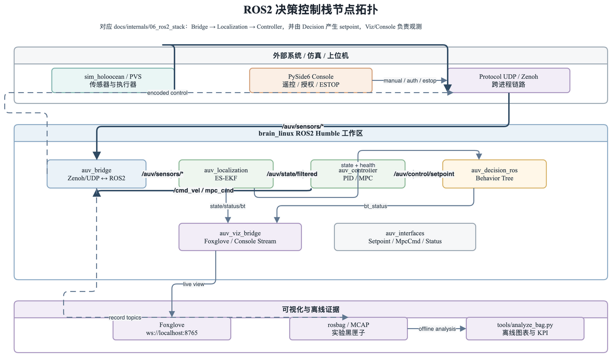
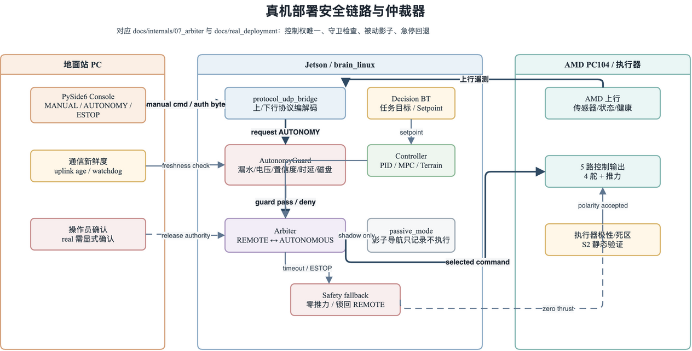
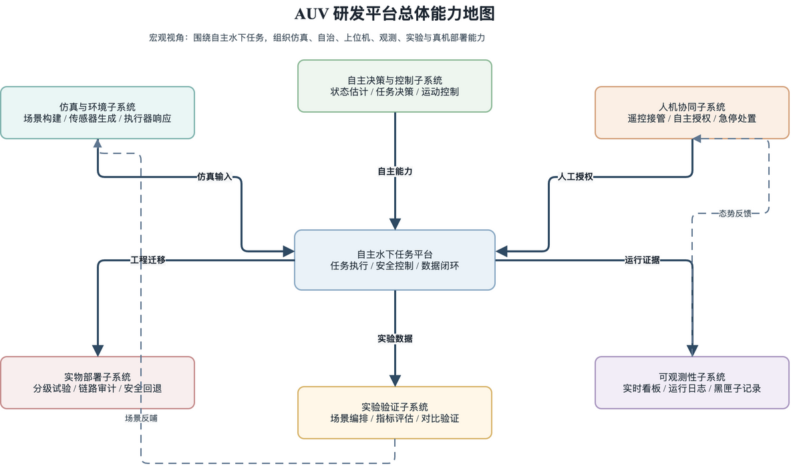
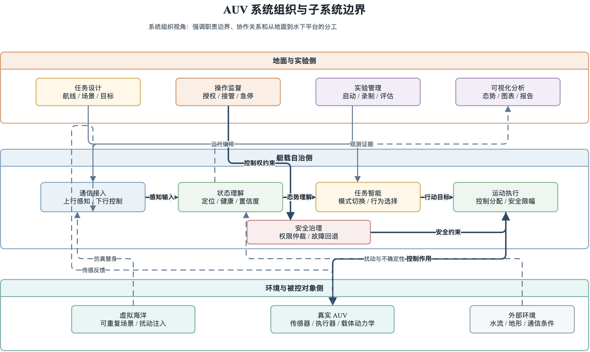
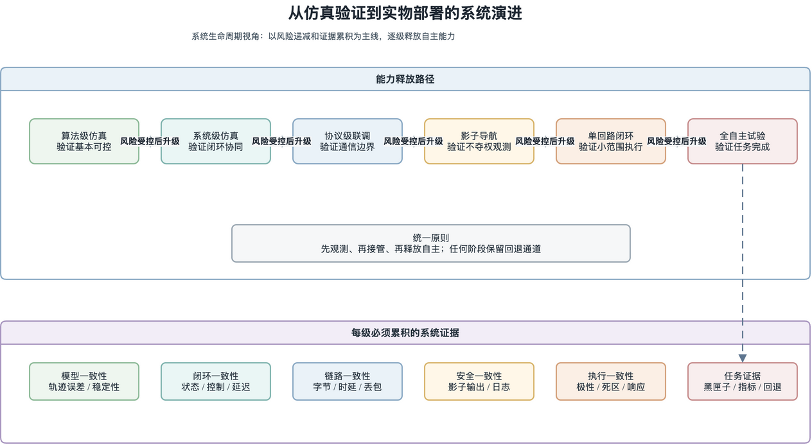
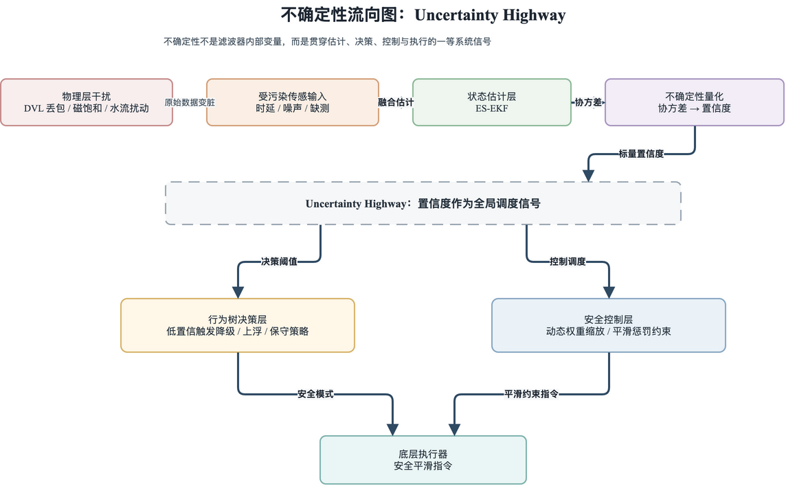
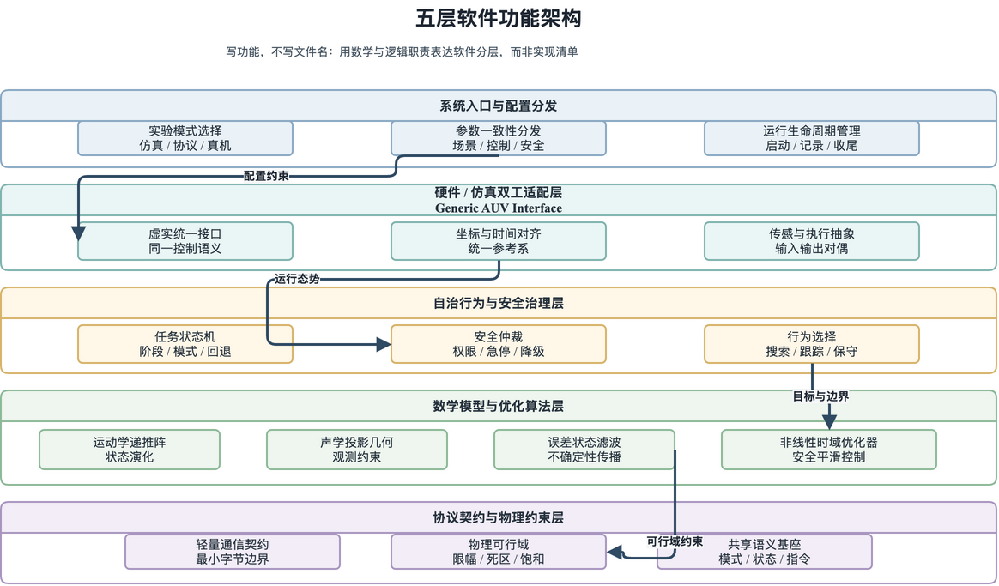

AUV Master Project · Architecture Diagram Set
15 diagrams · low-saturation IEEE-style · generated by generate_architecture_diagrams.py
V1 · Implementation (code-level)
1. 代码分层架构
auv_code_layer_architecture

2. 运行时数据流
auv_runtime_dataflow

3. ROS2 节点拓扑
auv_ros2_node_topology

4. 安全 Arbiter 部署
auv_safety_arbiter_deployment

V1 · System organization (subsystem-level)
5. 系统能力图
auv_system_capability_map

6. 子系统组织
auv_system_subsystem_organization

7. 自主功能闭环
auv_system_autonomy_functional_loop

8. 验证 → 部署阶梯
auv_system_verification_deployment_ladder

V2 · Thesis abstract (paper-ready)
9. 双脑异步硬件架构
auv_v2_dual_brain_async_hardware

10. Uncertainty Highway
auv_v2_uncertainty_highway

11. 五层功能架构
auv_v2_five_layer_functional_architecture

V2 · Schematic (new)
12. 行为树决策示意
auv_v2_behavior_tree_illustration

13. 任务状态机 Mission FSM
auv_v2_mission_state_machine

14. 紧急情况状态切换与仲裁
auv_v2_emergency_transition

15. 任务完整生命周期泳道
auv_v2_mission_lifecycle_flow